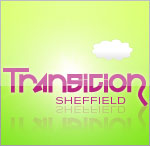

| Date, Time & Location | Tues 16 Mar 2010, from 7pm at The Riverside, 1 Mowbray St, Sheffield, S3 8EN |
|---|---|
| Details | A city-wide gathering - all welcome - Transition groups, Green Drinkers, community growers, eco-activists, Greens and many more get together for music, ale and chat.  The Dry Stone Wailers (of Zero Carbon Cabaret & Ceilidh fame!) will be playing Local real ale specially made for this event will be in the taps. Free entry. All Welcome. It'll be grand! Transition Sheffield website |